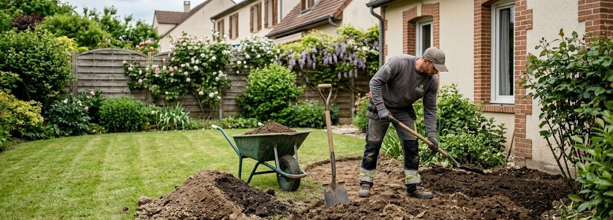
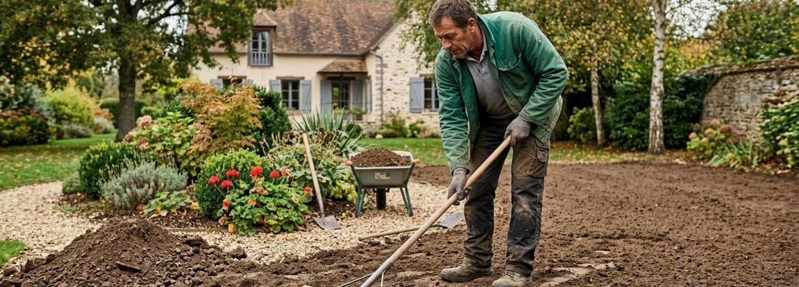
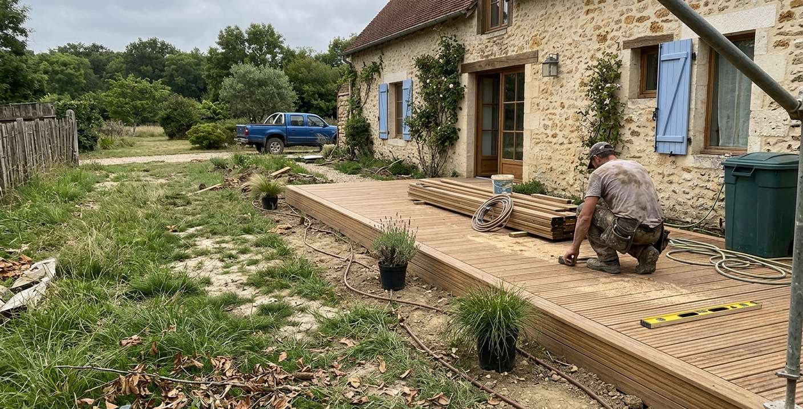
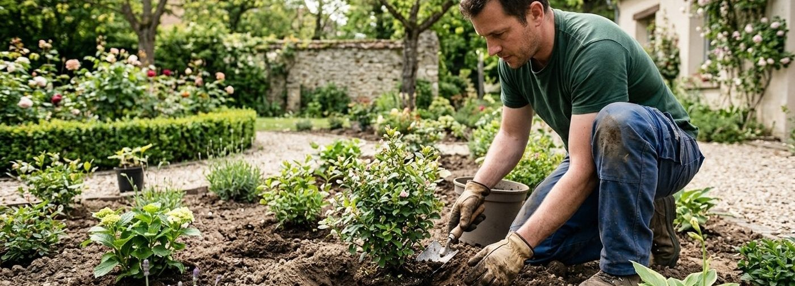
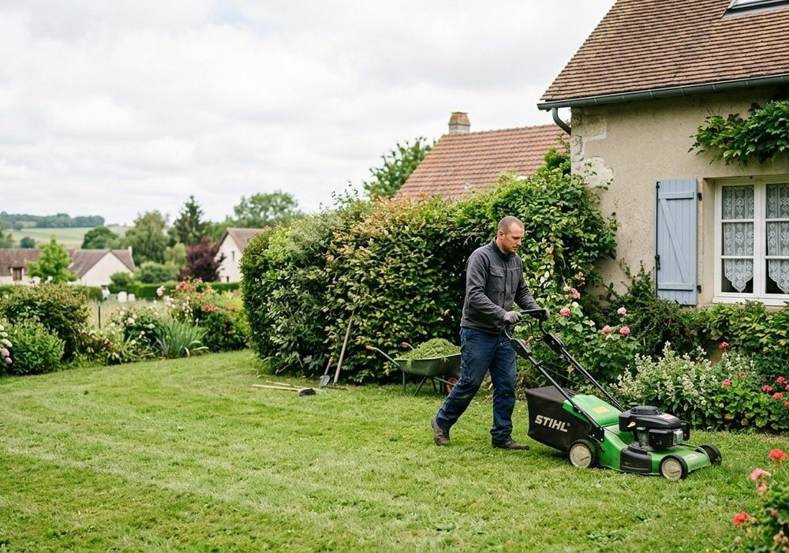
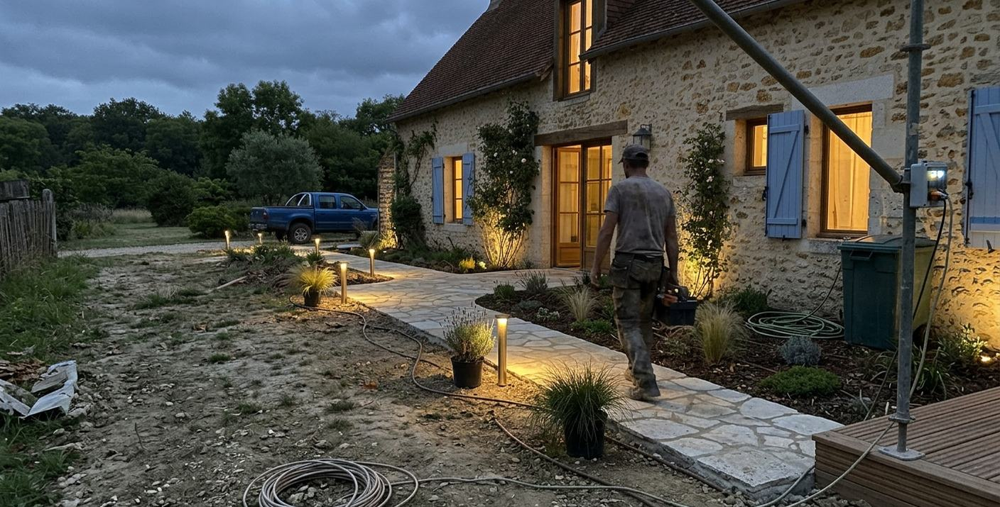

Conception du projet
Une réflexion sur l'organisation des espaces, des massifs et des cheminements.
Nos prestations
Quatre savoir-faire pour vos extérieurs, à Longnes (78).



Création
Nous concevons et aménageons votre jardin selon vos envies, votre terrain et l'usage que vous en faites.

Une réflexion sur l'organisation des espaces, des massifs et des cheminements.

Terrassement, nivellement et préparation des sols avant plantation.
Plantation
Nous choisissons et plantons arbustes, vivaces et haies, puis installons ou reprenons votre pelouse.



Image d'illustration.
Entretien
Pour garder un jardin agréable, nous intervenons ponctuellement ou régulièrement selon vos besoins.


Aménagement
Nous réalisons des ouvrages simples pour prolonger votre maison vers le jardin : allées, terrasses et murets.
Décrivez-nous votre besoin : création, plantation, entretien ou aménagement.